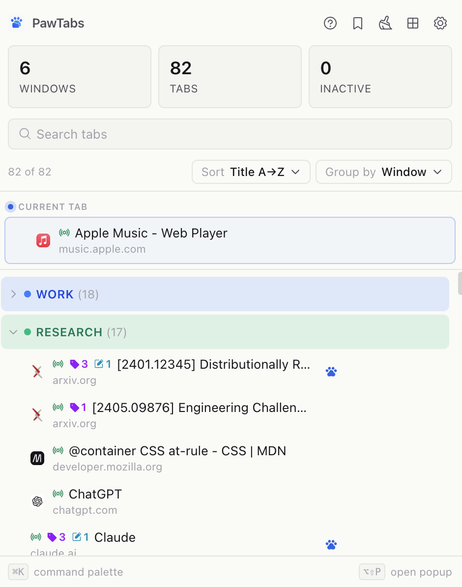
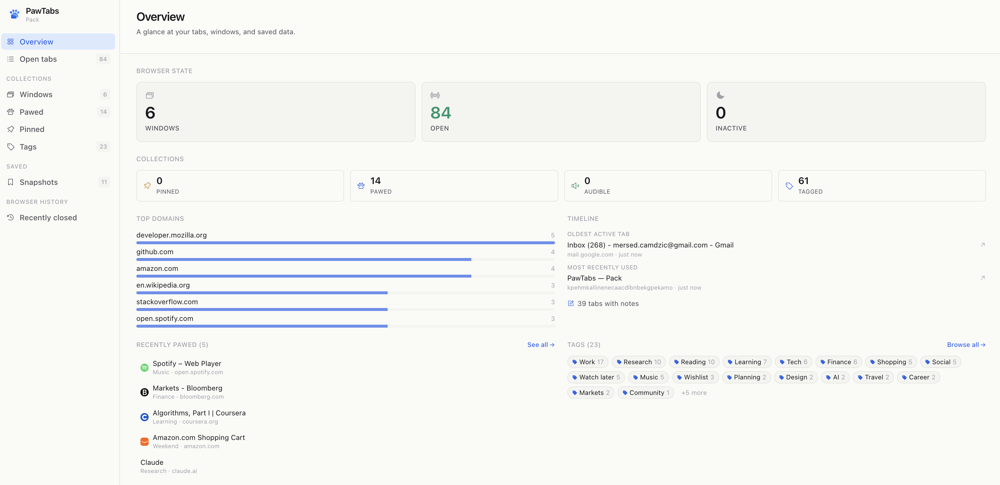
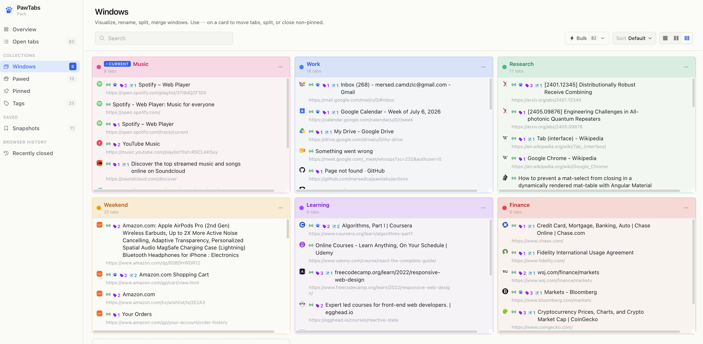
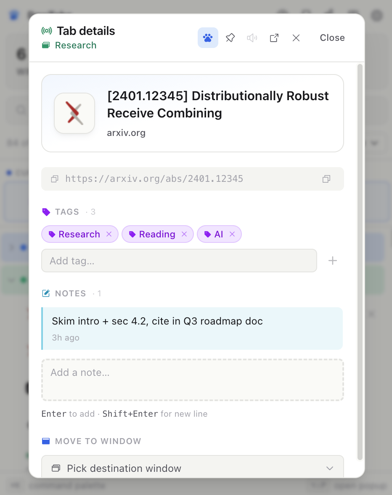
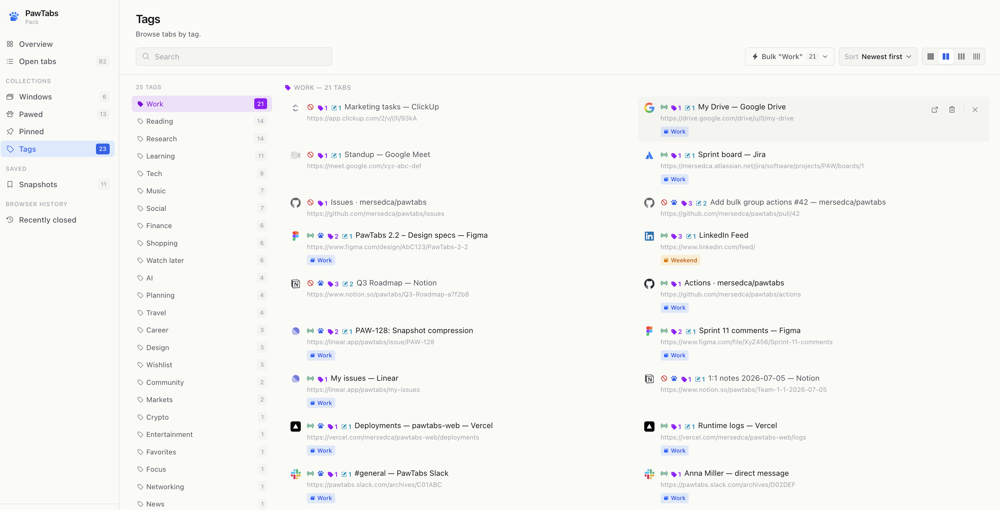

PawTabs is a Chrome tab manager that names and colors your windows, tags and annotates any URL, snapshots your sessions for safe restore, and helps you clean up without losing your place. Everything is local — no telemetry, no accounts, no cloud.
Save any URL persistently. Even after you close the tab it's still there in the Pawed list.
Stack multiple tags per URL (Work, Reading, AI…). Browse tabs by tag in Mission Control.
Add reminders, review comments, next steps. Notes persist by URL — outlive the tab.
"Work" blue, "Weekend" amber. Colors ripple through the popup, group headers, and window chips.
Save current tabs on a schedule (or manually). Restore any snapshot per-window or as one flat list.
Restores 90 tabs in ~1s. Each opens as an inert placeholder — no network hit until you click it.
Guided walkthrough that closes stale tabs safely. Every step auto-backs up before touching Chrome.
Fast jump to any tab, tag, or snapshot without leaving the keyboard.
No accounts. No servers. No analytics SDKs. Uninstall removes everything.





PawTabs is a fully local Chrome extension. It does not collect, transmit, store on remote servers, or share any of your data. There is no analytics, no telemetry, no third-party SDKs, and no account system.
What it stores locally:
tags, notes, snapshots, wizard backups, window
names/colors, and preferences — all in
chrome.storage.local
on your device.
What it does not do: it does not send any data over the network, does not use cookies, does not track you across sites, does not sync between devices, and does not include analytics SDKs.
Uninstalling the extension removes all PawTabs storage — Chrome guarantees full cleanup.